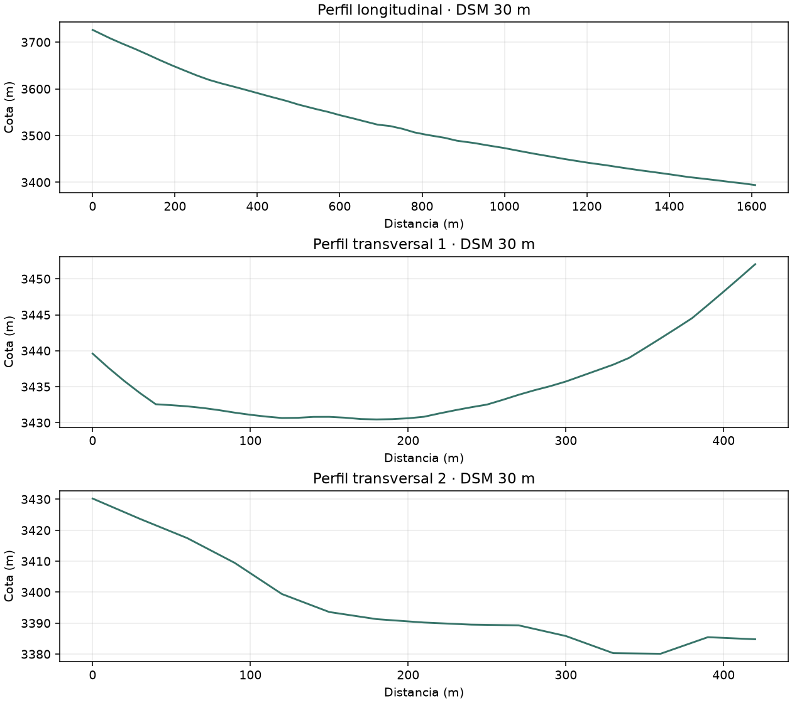
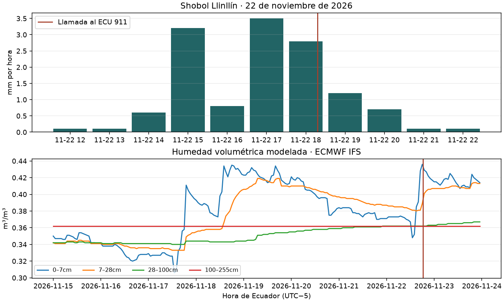
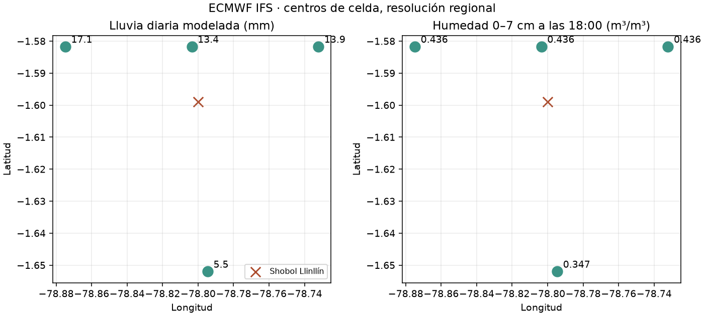
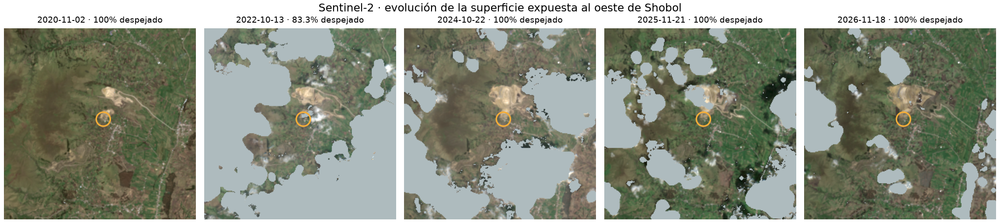
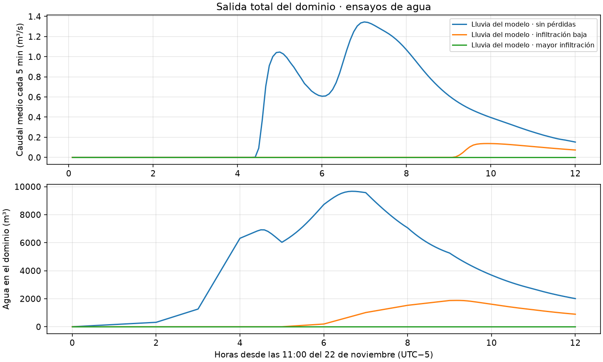
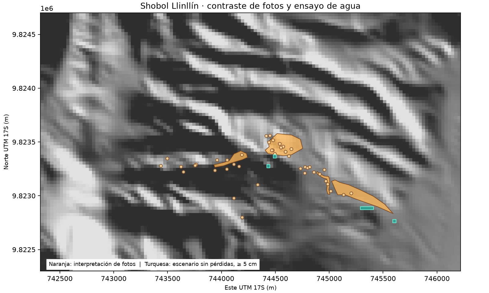

GeoRaga · San Juan, Riobamba · 24 de noviembre de 2026
El SitRep 104 documenta el desbordamiento de un canal de riego y viviendas afectadas la tarde del 22 de noviembre. A las 18:18, hora de Ecuador, el ECU 911 recibió la llamada que reportó la emergencia. El reporte también registra el colapso de un puente. SNGR, SitRep 104 · Comunicado del ECU 911 reproducido por Teleamazonas
Las fotos permiten seguir una traza entre la quebrada y el tramo bajo. Los ensayos de agua con lluvia regional dejaron sin solapamiento las tres áreas interpretadas. El origen, el momento de inicio y el volumen del flujo siguen por determinar.
Los informes nacionales 103 y 104 de la SNGR documentan el desbordamiento del canal de riego y las viviendas afectadas. El comunicado del ECU 911 registra el colapso del puente y la hora de aviso. Ecuavisa recoge la observación de Bomberos de material en la vía principal y en la quebrada. Las publicaciones consultadas y las fotos de inspección carecen de medidas de tirante del flujo, espesor del depósito, velocidad, caudal y volumen del aluvión. Los 3 km publicados se refieren al lugar de hallazgo de una víctima respecto de la zona de emergencia. SNGR, SitRep 103 · SNGR, SitRep 104 · Comunicado de ECU 911 · Declaración de Bomberos recogida por Ecuavisa
Se ensayó un aporte hipotético de 12.000 m³ de mezcla en 5 minutos, con un pico de entrada de 80 m³/s y una rugosidad efectiva de Manning de 0,11 s/m1/3. Son parámetros del ensayo. El flujo se enruta en una dimensión a lo largo de 1,79 km del eje interpretado de las fotos, con conservación de volumen y perfiles transversales extraídos del relieve Copernicus GLO-30. La cuadrícula de visualización es de 10 m y la resolución de la fuente de relieve es de 30 m. El método aproxima la movilidad con una onda cinemática. La geometría del canal y del puente, los cambios de composición, la erosión y la deposición quedan fuera del cálculo. WSL, parámetros y datos necesarios para calibrar flujos de escombros
| Sector | Llegada simulada a 15 cm | Espesor máximo simulado | Velocidad media máxima simulada |
|---|---|---|---|
| Quebrada | 0 min 40 s | 1,03 m | 2,49 m/s |
| Parcelas | 3 min 20 s | 0,73 m | 3,43 m/s |
| Vías y viviendas | 8 min 20 s | 0,71 m | 2,00 m/s |
| Tramo bajo | 13 min 50 s | 0,55 m | 0,66 m/s |
El máximo mostrado en el mapa es 2,2 m de mezcla en movimiento. El alcance acumulado por encima de 15 cm abarca aproximadamente 8,30 ha. Se superpone con el 73,3 % de la franja interpretada en parcelas, el 43,0 % de la franja junto a la vía y el 7,9 % del abanico aparente del tramo bajo. El eje se trazó con las mismas fotos, así que este contraste mide coincidencia espacial y la cobertura baja en el tramo final señala un desajuste importante. Los tiempos se cuentan desde el inicio del pulso supuesto. El espesor del depósito real quedó sin determinar.
Las huellas se recortaron a 420 m del polígono de la inspección y se depuraron por solapamiento. Las 363 huellas resultantes proceden de Microsoft Global ML Building Footprints. Para estimar 129 alturas se comparó la elevación de la cubierta con un plano local del suelo, ajustado alrededor de cada huella en el modelo de elevación de inspección. El filtro exigió cobertura del techo y muestras de terreno en al menos tres sectores alrededor de la huella. La medición relativa reduce el efecto de un desplazamiento vertical constante del ráster.
En otros 161 volúmenes se usaron estimaciones satelitales de Google Open Buildings 2.5D de 2023. Los 73 restantes tienen una altura de referencia de 3,2 m. Donde existe cobertura, el color de la cubierta se estimó con la mediana de la ortofoto del levantamiento. Los volúmenes representan huella y altura aproximada con cubierta plana. El número de plantas y detalles de fachada requieren observar cada edificio. Huellas de Microsoft · Alturas de Google Open Buildings 2.5D · Ver construcciones en 3D
La búsqueda comenzó en una ventana de 10 × 10 km alrededor de las dos referencias suministradas. El cálculo hidrológico usó una extensión de 18 × 18 km para reducir recortes de margen. La red D8 se derivó con llenado de depresiones y umbral de aporte de 0,20 km². Se conservaron como insumos el DSM Copernicus GLO-30, SRTM GL1 y el DTM nacional IGM 1:50.000. Las diferencias incluyen resolución efectiva, vegetación, fecha y referencia vertical. El terreno en cada ensayo se usó sin quemar canales ni alterar taludes.
| Comparación con Copernicus | Diferencia mediana (m) | P90 de diferencia absoluta (m) |
|---|---|---|
| srtmgl1 | -2,21 | 7,11 |
| igm-50k | -1,30 | 18,83 |
Se trazaron cuatro salidas de referencia ajustadas al drenaje derivado con desplazamientos de 8,8 a 90,1 m. El punto bajo reúne 1,579 km². Se exportaron pendiente, curvatura, dirección y acumulación representada por la red, orden Strahler, TWI, SPI y HAND. El D8 permite delinear aportes con una salida discreta. La dispersión de flujo en laderas requeriría una evaluación con MFD o D∞ antes de usarla para inferir rutas laterales. Copernicus · IGM
Las vías, edificios, puentes y drenajes disponibles se extrajeron de OpenStreetMap. Los puentes cartografiados no permiten identificar con seguridad el que colapsó. La geometría del canal, su conexión y sus cotas permanecen sin levantamiento. Las dos coordenadas iniciales se conservan como referencias de búsqueda. OpenStreetMap · ODbL

ECMWF IFS estimó 13,4 mm para el 22 de noviembre y un máximo de 3,5 mm/h en la hora que terminó a las 17:00. La misma celda regional cubre las cuatro microcuencas del corredor. Los acumulados de abajo terminan a las 18:00 para usar intervalos horarios completos. Las salidas de ERA5 y ERA5-Land disponibles llegan hasta el 18 de noviembre a las 18:00. Fuente y resolución de los productos ECMWF
| Periodo antecedente | ECMWF IFS (mm) | Horas de cobertura |
|---|---|---|
| 30 días | 173,5 | 720 |
| 7 días | 60,8 | 168 |
| 72 horas | 19,2 | 72 |
| 24 horas | 12,7 | 24 |
El suelo de 0–7 cm alcanzó 0,436 m³/m³ a las 18:00 en IFS, cerca del percentil 97,9 de las tardes de noviembre de 2017–2025 muestreadas. SoilGrids estima la textura y densidad en una celda de 250 m. La conductividad, la porosidad efectiva y el grado de saturación local requieren medición o calibración. La ESPOCH publica boletines y ofrece las series de estación mediante solicitud. Estación ESPOCH · SoilGrids
CHIRPS v3 preliminar tiene 25 días muestreados hasta 2026-11-20 y proporciona un acumulado parcial de 163,48 mm para el punto alto. Su versión diaria usa la distribución temporal de IMERG dentro de cada pentada. La comparación no cubre el 22 de noviembre. Los valores de IMERG a 30 minutos y la lluvia de estación en el sitio siguen pendientes. CHIRPS v3 · NASA IMERG


Las 42 fotos DJI tienen fecha y GPS comprobados entre EXIF y XMP. Se extrajeron 41 puntos de mira utilizables, 35 huellas de cobertura y 42 evidencias. La proyección estima la posición de cada píxel sobre el DSM con orientación DJI. La diferencia mediana entre la proyección central y el láser es de 4,0 m y su P90 es de 24,9 m. El láser tampoco es un punto de control topográfico.
COLMAP registró 40 fotos en dos bloques y estimó 32.700 puntos dispersos. Se ajustó cada bloque con los GPS de cámara en UTM 17S. Para aproximar el dátum vertical de las capas se restó la diferencia mediana de 33,9 m entre cotas DJI del láser y Copernicus. El ajuste carece de control de campo independiente. La nube densa del bloque mayor conserva 619.325 puntos y su superficie parcial cubre 37,47 ha en una cuadrícula de 2 m. Las celdas sin soporte quedan vacías. COLMAP
| Foto | Área interpretada | Superficie aproximada (ha) |
|---|---|---|
| 0016 | Franja oscura en parcelas | 1,49 |
| 0031 | Franja oscura en el entorno de la vía | 0,56 |
| 0033 | Abanico aparente en el tramo bajo | 4,64 |
| 0012 | Sector de suelo desnudo con bancos | 5,20 |
Las fotos 0010–0014, 0021–0023 y 0037–0040 muestran suelo expuesto con bancos y taludes junto a un corredor. La forma y cercanía permiten evaluar aporte de ladera. La contribución de esa superficie al aluvión y la secuencia de fallas siguen sin confirmarse.
Las escenas Sentinel-2 se compararon con máscara local de nubes y normalización de reflectancia. El porcentaje de superficie desnuda se refiere a la clase SCL 5 entre píxeles válidos de un círculo de 190 m en el sector bajo de los bancos. Los índices NDVI, NDMI, NDWI, MNDWI y BSI se exportaron a 20 m. NDMI describe respuesta espectral de vegetación y superficie. La capa volumétrica procede de IFS y ERA5-Land.
| Fecha UTC | Escena Sentinel-2 | Cobertura despejada (%) | Suelo desnudo (%) |
|---|---|---|---|
| 2020-11-02 | S2B_17MQU_20201102_0_L2A | 100,0 | 52,7 |
| 2022-10-13 | S2B_17MQU_20221013_0_L2A | 83,3 | 47,0 |
| 2024-10-22 | S2B_17MQU_20241022_0_L2A | 100,0 | 61,9 |
| 2025-11-21 | S2C_17MQU_20251121_0_L2A | 100,0 | 39,1 |
| 2026-11-18 | S2A_17MQU_20261118_0_L2A | 100,0 | 54,4 |
Sentinel-1 RTC de la órbita 18 permite una comparación entre el 15 y el 21 de noviembre. El cambio mediano fue 0,65 dB en VV y 0,40 dB en VH. Esa retrodispersión también responde a rugosidad y vegetación. Las escenas SAR posteriores catalogadas en GRD requieren su procesamiento con control de órbita. La búsqueda actual no encontró una escena posterior RTC comparable ni Sentinel-2 posterior para el área. Earth Search · Sentinel-1 RTC

El motor inercial local conserva masa en malla y usa presión hidrostática, gravedad y fricción de Manning. Cada corrida aplica la lluvia horaria modelada sobre la microcuenca baja, con sensibilidad de pérdidas según SCS-CN de referencia. Las pruebas incluyen ausencia de pérdidas, CN 89 y CN 74, Manning 0,035 y 0,050, dos fuentes de relieve, mallas de 30 y 60 m y pasos máximos de 8 y 4 s. Ambos CN se usan como supuestos de referencia para pastos en condiciones diferentes. El cálculo parte de superficie seca, excluye aporte medido del canal y registra salidas abiertas de borde. Tablas CN, HEC-HMS
| Ensayo | Entrada calculada (m³) | Profundidad máxima (m) | Superficie ≥5 cm (ha) | Velocidad máx. ≥5 cm (m/s) | Error relativo de masa |
|---|---|---|---|---|---|
| Lluvia del modelo · sin pérdidas | 20.837,52 | 0,531 | 0,63 | 0,746 | 2.90e-15 |
| Lluvia del modelo · infiltración baja | 1.973,74 | 0,053 | 0,09 | 0,000 | 2.07e-15 |
| Lluvia del modelo · mayor infiltración | 0,00 | 0,000 | 0,00 | 0,000 | 0.00e+00 |
| Infiltración baja · terreno más rugoso | 1.973,74 | 0,055 | 0,09 | 0,000 | 6.34e-16 |
| Infiltración baja · relieve IGM | 1.973,74 | 0,747 | 0,09 | 0,010 | 2.42e-14 |
| Infiltración baja · malla de 60 m | 1.971,49 | 0,074 | 0,36 | 0,002 | 1.65e-14 |
| Lluvia del modelo · infiltración baja | 1.973,74 | 0,053 | 0,09 | 0,000 | 6.02e-14 |
El ensayo con CN 89 acumula cerca de 0,05 m de profundidad máxima con Copernicus y cerca de 0,75 m con IGM. Estas diferencias entre superficies reflejan sensibilidad del cálculo. Los ensayos no cubren las tres áreas interpretadas y el resultado del escenario sin pérdidas queda a unos 190 m de la mediana de esas áreas. Green–Ampt requiere datos de infiltración y propiedades del suelo más representativas. Kestrel admite transporte y morfodinámica. ANUGA, TELEMAC-2D o r.avaflow serían alternativas según la evidencia de concentración, tipo de flujo, relieve y parámetros. Sigue pendiente una corrida de sedimentos calibrable con secciones, material y espesores observados. Kestrel


La unión de las tres áreas de traza interpretada ocupa aproximadamente 6,69 ha. Intersecta 676 m de ejes viales de OpenStreetMap y 4,14 ha clasificadas como cultivo por WorldCover 2021. El inventario de edificios OSM del entorno es incompleto y las viviendas afectadas se sustentan en el reporte oficial. Las áreas del mapa orientan inspección. La estimación de población y daños requiere catastro e inventario de campo. ESA WorldCover
Lluvia fuerte y desbordamiento constan en la documentación oficial. Saturación antecedente, obstrucciones, erosión de cauce y aporte de ladera quedan como hipótesis. La falta de una envolvente observada completa y el desacuerdo de las corridas impiden estimar con confianza el caudal pico real, el volumen movilizado, las velocidades, el tiempo de llegada y la deposición. GeoRaga se usó para diagnóstico metodológico. Una clasificación supervisada requeriría etiquetas de campo y validación espacial independiente.